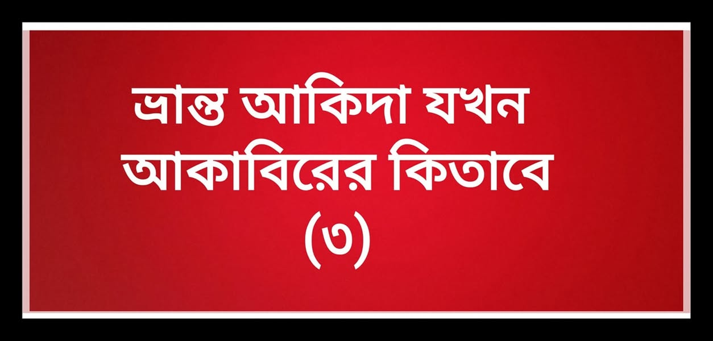

ভ্রান্ত আকিদা যখন আকাবিরের কিতাবে---(৩)
১৬ জুন, ২০২০
ভ্রান্ত আকিদা যখন আকাবিরের কিতাবে---(৩)
"কবর থেকে রুহানি ফয়েজ-বরকত হাসিল করার শিরকি আকিদা"
কিছুদিন পূর্বে হোমপেজে দেওবন্দের একটি ফতোয়ার ইংরেজি ভার্সন ঘুরে ঘুরে আসছিল। যেখানে এক প্রশ্নের জবাবে উল্লেখ করা হয়েছে যে, "বুযুর্গানের কবর থেকে বিশেষ ব্যক্তিরা ফয়েজ হাসিল করতে পারে!" এ নিয়ে বেশ ক'জন ভাইকে সরব হতে দেখেছিলাম।
কিন্তু আমি তখন ব্যাপারটা স্কিপ করে গেলাম। ভাবলাম, এটি দেওবন্দের নামে ফেক ওয়েবসাইটের ফতোয়া বা ম্যানুপুলেট করা স্ক্রিনশট হবে হয়ত। দেওবন্দিদের আকিদা এমন হওয়া অসম্ভব বলে আমার ধারণা ছিল।
কিন্তু ভুল ভেঙে গেলে যখন দেওবন্দের বড় বড় আকাবির থেকে কবরের পাশে মুরাকাবা করার কিসসা আপন ঘরানার নির্ভরযোগ্য কিতাবাদি থেকে সামনে উঠে এলো। আমি যেন নিজের চোখকেই বিশ্বাস করতে পারছি না। একদম থ হয়ে গেলাম। এসব আকিদা কোনো মুসলিম রাখতে পারে!
দেওবন্দের উল্লেখযোগ্য ব্যক্তিত্ব খলিল আহমদ সাহরানপুরি রাহ. (যিনি বজলুল মাজহুদের মুসান্নিফ) সম্পর্কে তার জীবনিতে এসেছে-
"তিনি তার সিলসিলার বড় বড় পীরের কবর থেকে ফয়েজ হাসিল করতেন। একবার তিনি খাজা আজমিরির মাজারের দিকে গমন করলেন। সাথে ছিলেন আশরাফ আলী থানভি রাহ. তখন সাহরানপুরী কবরের পাশে গিয়েই মুরাকাবায় বসে গেলেন। আর এমন গভীর ধ্যানে মগ্ন হয়ে পড়লেন যে, আশেপাশে কি হচ্ছে, না হচ্ছে কোনো হুশ ছিল না। পরে থানভী রাহ. ডাক দিলে সম্বিৎ ফিরে পেলেন।"
(বিস্তারিত- তাজকিরাতুল খলিল-৩৭১-৩৭২)
রশিদ আহমদ গাঙ্গুহি রাহ. এর সূত্রে বর্ণিত,
হাজি ইমদাদুল্লাহ মুহাজিরে মক্কিও বুযুর্গানে দ্বীনের কবর থেকে ফয়েজ হাসিল করতেন। এমনকি "কলন্ধর (কোনো এক পীর)-এর কবরের পাশে তিন দিন পর্যন্ত তিনি মোরাকাবায় মগ্ন ছিলেন।" (নাউজুবিল্লাহ)
(বিস্তারিত- এমদাদুল মুশতাক, থানভি-১৮৩, তাজকিরাতুর রশিদ-২/২৩৭)
আচ্ছা ভাই কোন সাহাবি বা কোন তাবেই, তবে-তাবেইন কবরের পাশে মুরাকাবা করে ফয়েজ হাসিল করেছিলেন, কাইন্ডলি আমাকে একটু দেখাবেন? (কিয়ামত পর্যন্ত সময় থাকল।)
আর সত্যিই যদি কবরস্থ ব্যক্তি থেকে কিছু নেয়ার থাকত, তবে সাহাবা, তাবেইন কি রাসূল ﷺ-এর কবর থেকে ফয়েজ নেয়ার এই চান্স মিস করতেন? নাকি আপনাদের পীরেরা রাসূল ﷺ আবু বকর, উমর, উসমান, আলী রা-এর চেয়েও বড় কেউ?!
রাসূল সা. বলেন-
زوروا القبور فإنها تذكركم الآخرة.
"তোমরা কবর যিয়ারত করো। কেননা তা আখেরাতকে স্মরণ করিয়ে দেয়।"
যিয়ারত করা ছাড়া অন্যকিছুর বৈধতা শরিয়তে যদি থাকতে, তাহলে রাসূল সা. কি তা বলে যেতেন না? নিশ্চয়ই বলে যেতেন।
আর আপনারা যদি মনে করেন- কবরে শুধু সেজদা দিলে শিরক হয়; আর কিছুতে শিরক নয়। ফয়েজ-বরকত হাসিলের নামে কবরে বসে বসে ধ্যান করা বৈধ, তাহলে আমি বলল, আপনি তাওহিদের অধ্যায়ে একটা মূর্খ-আহাম্মক। আর নাহলে নিশ্চয়ই দলের পূজা করতে গিয়ে কবর পূজাকে বৈধ বলার দুঃসাহস দেখাচ্ছেন। নিজেরা শিরকে নিমজ্জিত আছেন। সাধারণ মানুষকেও শিরকে লিপ্ত করছেন।
রাসূল সা-এর আনীত দ্বীনের সাথে এর দূরতম সম্পর্ক নেই।
কবর পূজারিদের অবস্থা এমনই, যেমনটা মহান আল্লাহ বলেছেন-
وَيَعْبُدُونَ مِنْ دُونِ اللَّهِ مَا لا يَضُرُّهُمْ وَلا يَنْفَعُهُمْ.
আর তারা আল্লাহ্ ছাড়া এমন কিছুর ইবাদাত করছে, যা তাদের ক্ষতিও করতে পারে না, উপকারও করতে পারে না।
(সূরা-ইউনুস-১৮)
আপনারা আমাকে বেয়াদব বলে গালি দিতে পারেন। বলতে পারেন আমি আকাবির বিদ্বেষী। অপবাদ দিতে পারেন আহলে হাদিস বা সালাফি বলে- এতে আমার কিছু যায় আসে না। আমার কাছে যে গোমরাহি আর শিরক-কুফর সুস্পষ্টভাবে প্রমাণিত হবে, আমি তা প্রকাশ করে সাধারণ মানুষকে সতর্ক করাকে ওয়াজিব মনে করি। গোমরাহিকে সর্বদা গোমরাহি হিসেবেই দেখি, তার বিরোধিতা করি। চাই তা আপন ঘরানার লোকের বিরুদ্ধে যাক বা অন্য ঘরানার। বিশুদ্ধ তাওহিদের দাওয়াত জারি থাকবে, ইনশাআল্লাহ।
